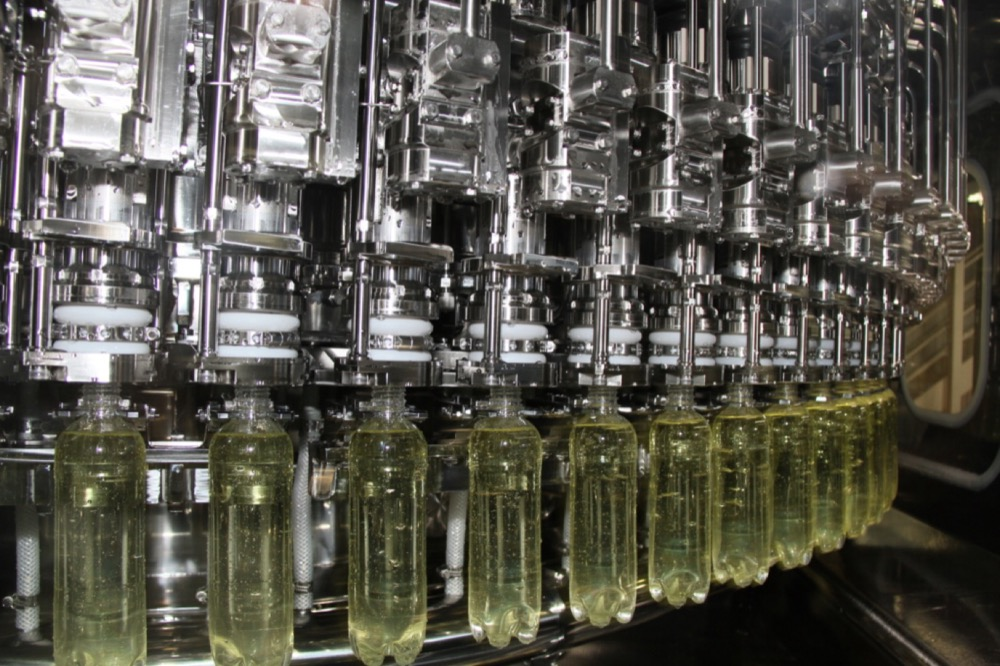
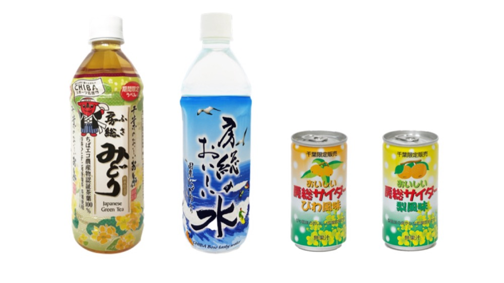
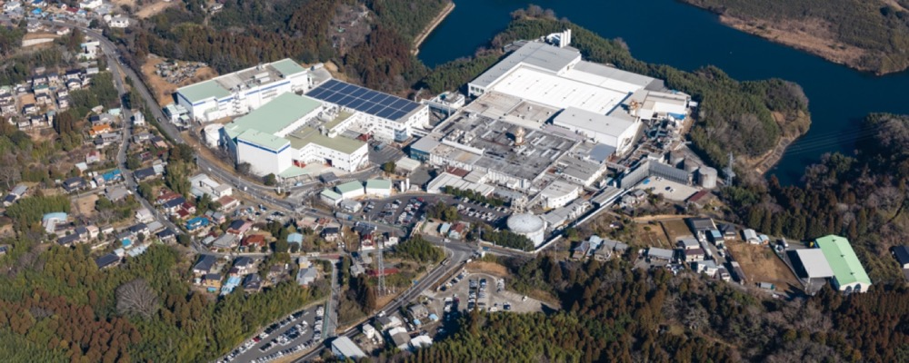

長生郡にある国内屈指の飲料製造会社とは
細井 富夫
ジャパンフーズ株式会社 代表取締役社長
1980年4月、伊藤忠商事株式会社入社。2005年4月、同社欧州繊維グループ長（兼）伊藤忠イタリー会社社長就任。2007年4月、伊藤忠（中国）集団有限公司経営企画グループ長就任。2011年4月、ジャパンフーズ株式会社顧問就任。2011年4月、当社執行役員・CIO就任。2012年6月、当社取締役CFO就任。2013年4月、当社常務取締役就任。2015年6月、当社代表取締役社長（現任）。
企業サイトを見るTRACK 01
長生郡にある国内屈指の飲料製造会社とは

千葉県長生郡長柄町に存在しているジャパンフーズ株式会社は、国内でも屈指の製造能力を誇る、飲料受託製造を基軸とした会社だ。
各飲料メーカーから生産を受託し、ペットボトル・缶・びんなどの飲料製造（ペットボトルは容器から製造）を、調合、充填、検査、出荷までトータルに対応している受託製造事業、会員制ミネラルウォーター宅配サービスとしておいしい水をご自宅やオフィスにお届けしている水宅配事業、長年培ってきた飲料充填工場経営のノウハウを活かし中国での受託製造事業を展開している海外事業、そして「房総のおいしい水」や「千葉のおいしいお茶 房総（ふさ）みどり」など、千葉の恵みを届ける自社商品事業の4事業を展開している。
「メーカーのさまざまな要望に対応できる最新鋭の生産設備や、安定して大量に生産できる供給体制、物流コストを最小限に抑えることができる抜群な工場立地…そして我々が長年培ってきた製造ノウハウ。このような会社を見つけるのは、なかなか難しいと思います。」
TRACK 02
上場は通過点。「誠実な企業」を目指すために

ジャパンフーズ株式会社は1976年、前身である日本飲料株式会社千葉工場の製造部門と販売部門とが分離され、1976年に製造部門が独立した形で設立。設立から2ヶ月後の1977年2月には日本飲料株式会社の社員と千葉工場の製造設備を受け継いだ形で、正式に業務を開始した。
「ひとが第一」をスローガンに、多様な価値観、チャレンジ精神、チームワークを尊重し、人材の更なる活性化に向けた人的資本経営を推進。結果、2003年には東証二部、2005年には東証一部に上場を果たす（現在は東証スタンダード）。
もちろん設備への投資も怠らない。2012年から2020年にわたり、総額220億円をかけて製造ラインを新たに4本増設し、クライアントからのどんな要望にも答えられるようにしている。

TRACK 03
サービスを支えているのはすべて「人」
現在、経済価値と社会価値を両立させた「100年企業」を目指しているジャパンフーズ株式会社。コア事業である飲料受託製造事業と新規事業（事業会社及び新ビジネス）の2つのセグメントでの持続的成長に注力している。
また品質経営を全社を挙げて推進しており、製品・サービスと業務プロセスの品質向上に取り組んでいると語る細井代表。新製品の積極受注や新たな販売領域の創出を通じて収益を最大化し、財務体質の改善に努めているという。
「しかしこれらをすべて支えているのは、実は無形資産（人的資本・技術・ノウハウ）なんです。うちはメーカーだからこそ、無形資産の拡充に向けた経営方針を第一に掲げています。」と語る細井代表。「ひとが第一」の考えのもと、これからもひとづくりに注力する。